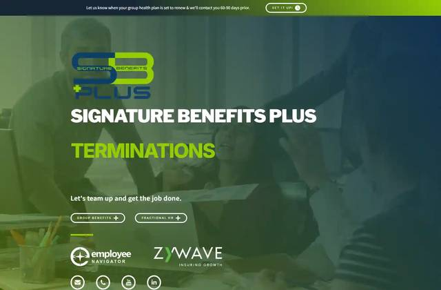
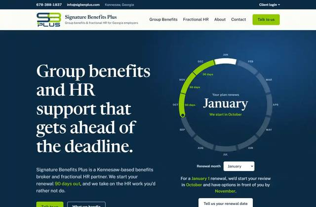
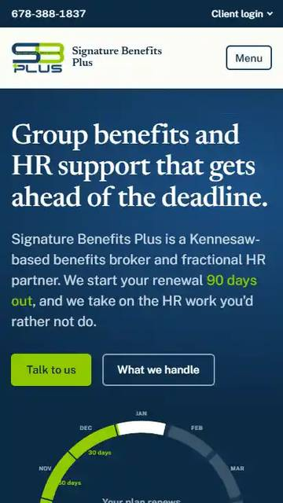
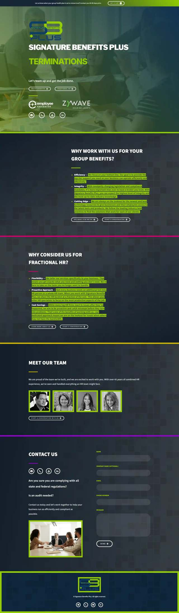
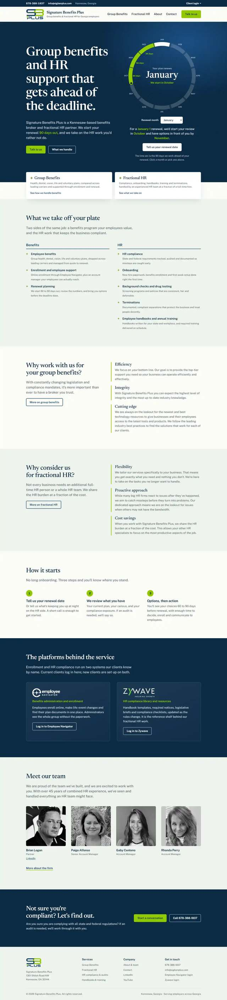
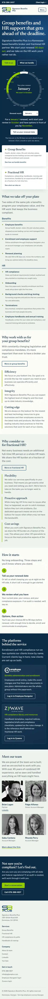

Verdict: technically tidy, strategically invisible. The current page passes Google's basic technical checklist (Lighthouse SEO 100), which is why an automated scanner would call it fine. It is not fine. It is one page with a ten-character title tag, no city or service keywords, no address, no structured data, no analytics, and an 8.65 MB autoplaying video as the first thing a phone downloads. A business searching for a benefits broker or fractional HR in Kennesaw or metro Atlanta has no realistic way to find it.
The rebuild delivered alongside this report addresses every item marked "Fixed in rebuild" below. Items marked "Client action" need the business owner: confirming the street address, claiming the Google Business Profile, and connecting Search Console, analytics and a form endpoint.
Searches for the exact brand name returned the site only when the query also contained a team member's name or the words Kennesaw or Georgia. A plain search for "Signature Benefits Plus" surfaced unrelated companies first. There is no Google Business Profile for Signature Benefits Plus; the only local listings found belong to the sister company Signature Benefits at the same phone number, and those listings disagree with each other about the suite number (110, 111 and 141 at 1301 Shiloh Rd NW). That inconsistency, called a NAP mismatch, is exactly what suppresses a local business in map results.
No Google Business Profile, no address on the page, no LocalBusiness structured data, and no mention of Kennesaw, Georgia or Atlanta anywhere in the HTML.
Address and phone in the footer and contact page, InsuranceAgency and ProfessionalService schema with the postal address and service area on every page, city and state in titles and copy.
Claim the Google Business Profile as "Signature Benefits Plus" and align the suite number everywhere.
"Group benefits broker," "fractional HR," "HR compliance audit" and the team all live at a single URL with anchors (#one, #two, #three). Google ranks pages, not anchors, so the site can rank for at most one topic.
Five pages, each with its own title, description, H1, breadcrumbs and schema: Home, Group Benefits, Fractional HR, About, Contact.
Ten characters, no business name in full, no service, no location. The Open Graph title is the same. The meta description, "A comprehensive HR company for Group Benefits and Fractional HR," is duplicated twice in the head and names no place.
Example: Signature Benefits Plus | Group Benefits & Fractional HR in Kennesaw, GA, with unique titles and descriptions on each page.
Zero JSON-LD blocks. Google has no machine-readable business name, address, phone, logo, team or FAQ to build rich results from.
Organization, WebSite, Service, BreadcrumbList, FAQPage, Person and ContactPage schema generated per page.
498 words total. The eight service names (onboarding, drug testing, handbooks, and so on) appear once each as a single word in an image-style menu with no explanation. The sitemap claims the page changes daily; it has not changed since July 2024.
Each service gets a plain-English description, each offering page gets an FAQ, and the renewal process is explained as a timeline. Sitemap uses real dates and monthly frequency.
No Google Analytics, Tag Manager, Clarity or any analytics script. No evidence of Search Console verification. Nobody can tell what, if anything, the site produces.
Add GA4 (one line in the build script) and verify the domain in Search Console, then submit /sitemap.xml.
Two partner logos carry the alt text "Log in". Team photos repeat their visible captions as alt text (Lighthouse flags this as redundant). Images have no width or height attributes. The only outbound links are two login portals, YouTube and one personal LinkedIn profile.
Descriptive alt text, explicit dimensions on every image, lazy loading below the fold, and a client-login menu that explains what each portal is for.
Lighthouse scores for the live site and the rebuilt site. Mobile is the one that matters for ranking. The rebuilt site was measured on a bare local server with no compression or caching, so its numbers are a floor; any normal host will do better.
| Performance | |
|---|---|
| Accessibility | |
| Best practices | |
| SEO checklist |
| Performance | |
|---|---|
| Accessibility | |
| Best practices | |
| SEO checklist |
The "SEO" category in Lighthouse checks about a dozen mechanical items (viewport, title present, links crawlable, robots valid). A perfect score there says nothing about whether anyone can find the site.
| Mobile metric | Current | Rebuilt | Why it matters |
|---|---|---|---|
| Largest Contentful Paint | 4.2 s | 1.6 s | Google's "good" threshold is 2.5 s. The current LCP element is the video poster; the rebuilt one is the headline text. |
| First Contentful Paint | 1.9 s | 1.6 s | Measured on a localhost server with no compression, so the rebuilt figure will improve further on a real host. |
| Total Blocking Time | 0 ms | 0 ms | Neither site runs heavy scripts. |
| Cumulative Layout Shift | 0 | 0.05 | Both under Google's 0.1 threshold; the rebuilt site's small shift is the web font swapping into the headline. |
| Total transfer | 9,131 KiB | 219 KiB | 42 times less data. On a cellular connection this is the difference between a bounce and a read. |
| Render-blocking fonts | 764 ms (Inter, Libre Franklin) | 0 ms | Fonts preload and apply when ready, with system fallbacks in the meantime. |
Set to autoplay preload="auto" loop and served without a cache header, so it downloads in full on every visit, including over cellular. It is the Largest Contentful Paint element and the main reason mobile performance is 84 instead of high 90s.
Removed. The hero is typographic with an interactive renewal planner; the one photo is served as WebP at two sizes.
cache-control: max-age=0 on the document, no Strict-Transport-Security header, and the entire Carrd stylesheet inlined into a 352 KB HTML file (40 KB compressed). The TLS certificate is valid (Let's Encrypt, renews November 2026). The HTTP to HTTPS and non-www to www redirects are correct.
17 KB external stylesheet, an .htaccess with long cache lifetimes, compression, HSTS and security headers for Apache hosts; equivalent settings are automatic on Netlify, Cloudflare Pages or Vercel.
Both versions of the current page share the same problems: a hero built on a busy video with the logo, headline and a cycling service word fighting for attention; every paragraph of body copy rendered as lime highlighter blocks on dark navy; buttons that are small, outlined, all-caps and low contrast; and a contact section that leads with a stock photo before the form. On a phone the first screen is the video and logo only, and the service list is replaced by a single rotating word, so a visitor can scroll two screens without learning what the company does.






Body copy in lime highlight blocks on navy passes an automated contrast check but is tiring to read at paragraph length, and the all-caps outlined buttons at 11 px are below comfortable tap size.
Light page, dark navy text, a serif headline face paired with a clean sans, 17 px body text, solid lime buttons with navy text at 46 px tall, and a 16 px minimum side gutter at every width.
The page is a Carrd export: the form posts to Carrd, the CSP only allows framing by carrd.com, internal navigation uses javascript: links, and the redirect page is served as ISO-8859-1. None of this blocks indexing, but it means the site cannot be moved or extended without starting over.
Plain HTML, CSS and 4 KB of JavaScript with no framework or platform dependency; a build script regenerates pages from one shared layout.
| URL | Title | Target searches |
|---|---|---|
| / | Signature Benefits Plus | Group Benefits & Fractional HR in Kennesaw, GA | brand name; "benefits broker Kennesaw" |
| /group-benefits/ | Group Employee Benefits Broker in Kennesaw, GA | Signature Benefits Plus | "group health insurance broker Kennesaw", "employee benefits broker Atlanta" |
| /fractional-hr/ | Fractional HR Services for Small Businesses in Georgia | Signature Benefits Plus | "fractional HR Georgia", "HR compliance audit Atlanta", "outsourced HR Kennesaw" |
| /about/ | About Signature Benefits Plus | Benefits & HR Team in Kennesaw, GA | team names; "Signature Benefits Plus reviews" |
| /contact/ | Contact Signature Benefits Plus | Kennesaw, GA | 678-388-1837 | phone number; "Signature Benefits Plus contact" |